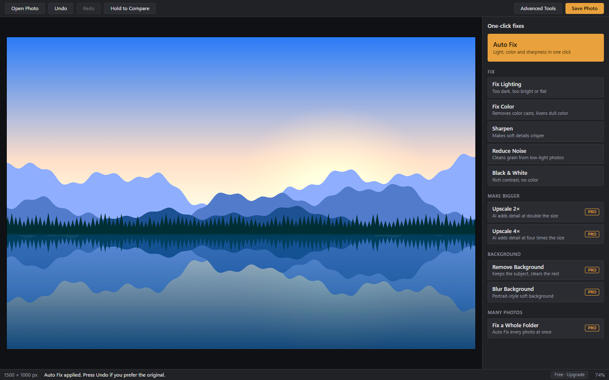

A little less editing. A lot more photo.
Your photos.
Their best light.
Bring out what you love in every shot. Fix light, color and sharpness in one click, right on your Windows PC.
Free to start · Windows 10 & 11 · No account needed

Less time at the controls.
More room for your creativity.
Edited on your PC
No photo uploads
No watermarks
Your originals stay yours
FROM ALMOST TO JUST RIGHT
A good photo is
just a few clicks away.
Start with a simple fix. Go deeper when you want to. Facet gives you room to do both.
Open a photo
Drop it onto the window, or choose it from your PC.
Click a fix
Start with Auto Fix. Hold Compare to see your original, and Undo if you prefer it.
Save
Facet suggests a new file name, so a quick save won't replace your original.
KEEP IT SIMPLE. OR GO PRO.
Your next great edit
starts here.
Everyday essentials, free. Extra possibilities when you need them.
Facet
- Auto Fix, plus Fix Lighting and Fix Color
- Sharpen, Reduce Noise and Black & White
- Advanced tools: layers, brushes, selections and crop
- No watermarks
Facet Pro PRO
- AI upscaling to 2× and 4× size
- One-click background removal and blur
- Fix a whole folder of photos at once
- Open and save PSD files
GOOD TO KNOW
A few things you
might be wondering.
Why does Windows show a warning when I install it?
Facet isn't code-signed yet, so Windows SmartScreen may say it doesn't recognize the app. Check that you downloaded the installer from the official Facet GitHub releases page before deciding whether to proceed.
Are my photos uploaded anywhere?
No. Editing, including the AI tools, happens on your PC. If you subscribe, Facet contacts Gumroad to check your license key, and it sends only that key and the product ID.
How do I activate Facet Pro?
After you subscribe, Gumroad emails you a license key. Open Facet, click Free · Upgrade at the bottom right of the window, then enter the key and click Activate.
How do I cancel?
Use the Manage membership link in your Gumroad receipt email.
Does upscaling need a powerful PC?
No, but a graphics card makes it much faster. Without one, Facet uses your processor, and large photos can take several minutes.